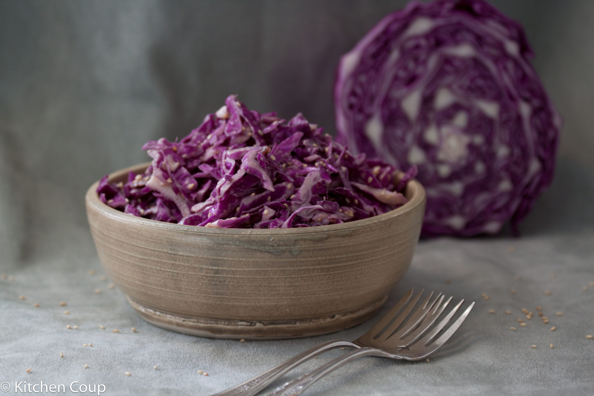

Purple Gabbage Salad

Purple Cabbage Salad
This recipe is my mother's recipe,
and it's great for a delightful side dish! Hope you enjoy!
Ingredients
- 2 ½ cups shredded red cabbage
- 1 (10 ounce) can mandarin oranges, drained
- 1 green onion, chopped
- ¼ cup sweetened dried cranberries
- ¼ cup pine nuts
- ⅓ cup canola oil
- ¼ cup vinegar
- 1 tablespoon white sugar
- 2 pinches salt
Directions
Step 1
Lightly toss red cabbage, mandarin orange segments,
green onion, and cranberries together in a salad bowl.Step 2
Toast pine nuts in a small skillet over medium heat,
stirring constantly, until fragrant and lightly browned, about 2 minutes.
Remove immediately to a bowl and let cool.Step 3
Whisk canola oil, vinegar, sugar,
and salt in a bowl until sugar and salt have dissolved.Step 4
Stir toasted pine nuts into salad and pour dressing over the top.
Toss again to coat salad with dressing.